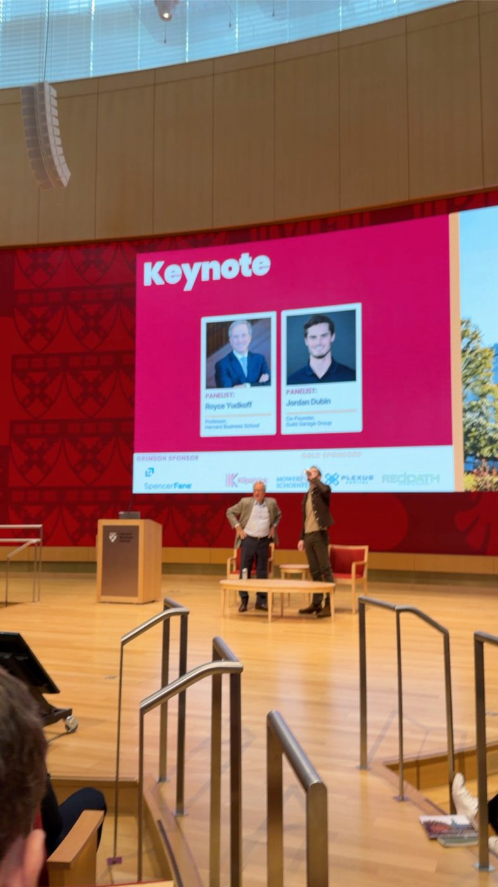
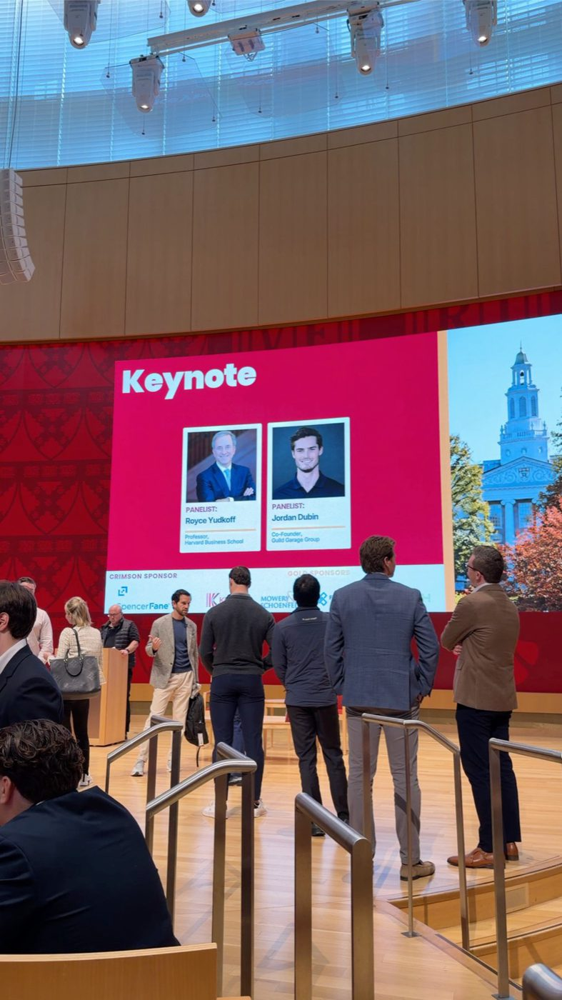

Keynote: Beyond Capital, Guild Garage Group
From first semester to Guild Garage: what Jordan Dubin said about starting fast
Jordan Dubin told the room he starts a new category with a few months of talking to owners, and does not rule out desk research.

Jordan Dubin gave no step-by-step recipe for speed, but he was clear about where he spends his hours. He told the keynote room that he now starts a new category with a short sourcing sprint of 20 to 30 owner conversations over 2 to 3 months, and that desk research still has a place. He also talked about partners, early hires and a founder mindset, though he did not claim these explain his pace. I came away believing the first part is a method a searcher like me can copy, even without a team of his size.
Where I was sitting
Luke Tatone of Searchfunder invited me to the 12th Annual HBS Entrepreneurship Through Acquisition Conference at Harvard Business School, and I attended on Saturday 14 November 2026. The overview page covers the whole day. My task was to attend as many sessions as I could and learn from people who have done it. I am an operator searching for a small business to buy, and I wrote this for people like me. The message under everything I heard: it is possible, and here is how others did it.
This session was a keynote called Beyond Capital: Guild Garage Group. Royce Yudkoff, a Harvard Business School professor (Carnegie Corporation lists him as a Professor of Management Practice of Entrepreneurial Management there), interviewed Jordan Dubin. This is my account from being in the room, in my own words. I paraphrase what was said, and where a number came from Yudkoff's introduction or from a public source, I say so.

What I went to learn
For this keynote, I wanted to understand one thing: how does a person go from a first semester of business school to running a large company built from many smaller ones, and how does he pick the trade? I have grouped what I heard into five topics.
The simple version. A roll-up is when one company buys many small companies in the same trade and runs them as a group. The first company you build is called the platform. Later purchases are add-ons. Dubin has built several of these, and his main advice was to go meet the owners early.
Topic 1: The timeline, and what is public
ServiceTitan's customer story on Guild says Dubin co-founded Guild in 2023. Here is the arc, with a source for each step.
- Guild. Yudkoff said Dubin started it in September 2023, in his first semester at HBS. Guild is an alliance of residential garage door service companies. Its first press-released partnership was Right Way Garage Doors on 18 July 2024.
- Galaxy. Yudkoff said it came in Dubin's last semester. ServiceTitan announced it on 14 October 2025 as an alliance of commercial door, gate and access control companies.
- Oak Hill. Oak Hill Capital announced a partnership with Guild on 1 April 2026. Its adviser Paul Weiss cites 28 local brands in 30 states, says terms were not disclosed, and says management and local operators remain significant owners. Yudkoff called it a sale and recap (a recap means the owners sell part of the company and usually keep a stake); Dubin described it as a sale to private equity, his first.
- 599 Holdings and Titan. Titan Trades Alliance, a residential HVAC, plumbing and electrical group under 599, was announced on 10 August 2026. By mid September, Construction Owners reported seven markets and more than 700 employees. The speakers gave different dates for the launch of 599 itself, and I could not confirm one publicly, so I leave it undated.
Jordan Dubin went from a first-semester start to a new platform in under three years.
Read from top to bottom. Each dot is a dated step in his story.
On size, Yudkoff introduced Guild as having revenue north of $350M. That is his number from the introduction, not one Dubin gave. Press reports (Privsource) say over $300M, and neither company has confirmed a figure. Yudkoff also called 599 an AI-native vehicle for roll-ups in the trades. I found no public source that uses that label, and Dubin did not talk about AI in the session I attended.
The simple version. The big numbers in this story come from the person introducing Dubin, or from news reports. They are not audited facts. What is solid is the order of events: Guild, then Galaxy, then a partnership with a larger investor, then a new group for the trades.
Topic 2: Spend less time at the desk and more with owners
This was the part I came for. Dubin said his own approach used to be more academic, and it changed. Yudkoff remembered him arriving at his office as a first-year with a careful analysis of where to start a roll-up. Today Dubin begins with the sprint. His reason is that a spreadsheet cannot show you how owners in a trade think, price their companies and treat each other.
He did not say to skip desk research. Yudkoff summed it up as doing some, but doing less. Dubin added that his nightmare is spending months on a perfect thesis, raising money, and then finding the pool of good owners has dried up.
He gave two examples, and they point in opposite directions.
Point 1: pool service looked perfect on paper, until owners described their prices. Dubin described a market that was more than 90% fragmented (split among very many small owners), worth over $7B, and unsophisticated. After 20 to 30 owner conversations he learned that owners routinely buy and sell customer routes, priced at 2 to 3 times revenue. Revenue pricing hides how profitable a business really is, and he found owners assumed their whole company was worth the same multiple (the price as a number of times revenue or profit). He judged the prices would likely be unreasonable. Why it matters: a few conversations changed his view of a category that looked good on paper.
Point 2: HVAC, plumbing and electrical looked crowded, but owners showed him a gap. Dubin described a category of about $265B with around 100 private equity backed platforms. (Private equity firms buy companies using money from outside investors.) It looks picked over. But talking to owners, he found a younger wave of owner-operators who were not part of the first wave of consolidation around 2019 and 2020, or were then too small to attract it. He said they have since grown at double-digit rates on their own, and that many are in their early to mid thirties and have leaned into software in a way older owners did not need to. Why it matters: this is how Dubin described the case for Titan. Yudkoff noted this kind of insight is hard to find in an analyst report.
Dubin's advice: spend less time at the desk and more time with owners.
Scroll to watch it play once. The bars begin desk-heavy, the way Yudkoff said many newcomers start, and end where Dubin says to be.
The simple version. Imagine choosing a restaurant. You can read every review online, or you can walk in and talk to the people eating there. Dubin starts with the talking and does not rule out the reading. The reading tells you what a category looks like. The talking tells you whether you would want to be in it.
I would add: sit down with them, have a beer, listen. That line is mine, not Dubin's. What he did describe is running around the country and making friends with owners, and he said he loves it. To me, that is the same instinct.
Topic 3: Build the team before you need it
Point 1: it is a team sport. Dubin said roll-ups need people strong in deals, operations, marketing, people management and technology, and he treats the first corporate hires as co-founders too. One example was Jake Wold, who ran his own garage door company that joined Guild and later became its chief operating officer, per ServiceTitan.
Point 2: partnership is a personal choice. Dubin was careful to say that others succeed with one partner or none.
Point 3: hire in a set order. Dubin said to start with the CEO and treat that person almost as a fourth co-founder, then add a controller (who runs the accounting) and a head of HR before the first deal, then hire as needs appear. Titan also hired a CFO before its first deal, which Guild and Galaxy did not. He was careful to say this fits his strategy and is not the only route.
Why it matters: many searchers work alone at first. Dubin's point is that what you build is a company, and companies need people before they need deals.
Topic 4: Find the best owners, then earn them
Point 1: narrow the field. Dubin said less is more. Learn who the cultural leaders of a trade are, and shrink a market of about 10,000 businesses to a top 100, instead of cold-calling everyone.
Point 2: use signals. In garage doors, he said, the category was about 92% fragmented, with about 15,000 independent operators. He then looked for three signals: owners who used ServiceTitan (software for running a field-service business), owners who had hired one particular branding firm, and owners in a best-practices group tied to Tommy Mello. Mello is the founder of A1 Garage Door Service. About 100 firms met at least one signal and 20 met all three. I could not confirm the branding firm or the group from public pages, so I describe them as Dubin did.
Point 3: buy great operators first. He offered real rollover equity, meaning the seller keeps part of the company and shares in its growth, and a caring partnership. Fixing weaker companies, he said, comes later in a platform's life.
Point 4: pitch owners like investors. Asked how Titan stands out from other consolidators, Dubin said he uses warm introductions, since the top of residential services is a close community. He gives owners the full, detailed pitch he would give an investor, invites pushback, and leans on the first leader who joins to start a flywheel. Titan's founding partner was a family plumbing and heating company in Ohio, per BriefGlance's launch coverage.
For searchers and investors: how I would turn this into a sprint of my own
This is my own adaptation, not something Dubin laid out.
- Pick a trade with a thesis, not a conclusion. Write what you believe and what would change your mind.
- Aim for 20 to 30 conversations over 2 to 3 months. That was Dubin's range for his own sprints. If you are alone, you might stretch the time.
- Ask about culture, not just numbers. How do owners price their companies? Who do they admire? What software do they run on? Pool routes at revenue multiples were a cultural fact that changed his view.
- Look for a second filter. Garage doors had three signals that made a short list. I would test whether owners in my trade share an association, a software tool or a peer network.
- Decide in advance what a pass looks like. Pool service looked great on paper until owner conversations changed Dubin's view. A sprint is only useful if it is allowed to end in no.
Dubin also said his approach fits his strategy of fast, repeated deals. A single acquisition has different needs, so take what helps and leave the rest. If you are weighing how to pay for that single acquisition, the SBA financing page has my understanding from the lenders.
Topic 5: Why he sold, and what comes next
Point 1: the reasons for the Oak Hill deal. Dubin said it was a hard decision that felt fatal at the time. He gave three reasons. The business had grown larger than any of them expected, and he worried that waiting would shrink the pool of buyers. It had outgrown its lender, and the next stage would need a larger, more formal one. And he and his partners felt they are better at starting than at taking a company from a large base to a much larger one. He said it was his first sale to private equity and praised Oak Hill.
Point 2: a permanent home for the next ones. 599 Holdings is a permanent capital vehicle for the trades, meaning money that is not on a fixed exit clock. Dubin said a permanent vehicle avoids an exit clock of 3 to 5 years and the work of standing up a new vehicle every other year. He and his partners do not want to run a private equity firm. Titan is platform 1. Platform 2, he said, is a media platform for content creators in the trades, starting that week.
Point 3: what keeps him up at night. Dubin said that with about 50 small businesses, there is always something to lose sleep over. He said his bigger worry is how to scale what they have built beyond his own travel.
The simple version. A vehicle with an exit clock is like a rental car: you hand it back after a few years. Dubin is building something closer to a home he keeps. That changes how he buys, because he is not planning the next sale.
He also described the founder mindset he looks for. People building a platform from nothing, he said, should think of themselves as founders, not investors. That takes optimism so strong it can look like fooling yourself, plus relentlessness.
Putting it together
Dubin did not give a neat recipe. What I heard were habits that stack up: talk to owners early, choose partners and first hires well, aim at the best operators, and pitch them with respect. The roll-ups panel later that day showed five other operators building groups like this in their own ways.
Dubin's order of work: a short desk check, many owner talks, then the best operators and a team.
Six steps from his advice, top to bottom. The copper step was the main takeaway for me.
I work closely with union sheet-metal and HVAC contractors, members of SMART (the sheet metal workers' union), so the Titan story is close to home for me. That is my own connection, not something Dubin said. Many of those shops are HVAC companies, and the thesis I keep coming back to is residential HVAC plus AI tools that take the scheduling, quoting and paperwork off a technician's plate so more of the day goes to the work itself. Yudkoff introduced 599 Holdings as an AI-native permanent capital vehicle for roll-ups in the trades, so it was encouraging to hear the same direction from people much further along. And I would add one habit of my own to Dubin's: go on site, sit down with the owner, have a beer and listen. The value is usually in the room, not in the spreadsheet.
What I am taking home
- Do a short sprint of real conversations before you fall in love with a thesis. Dubin described sprints of 20 to 30 owners over 2 to 3 months. Desk research still has a place, and Yudkoff's summary was to do some, but less.
- Let a category change your mind early. Pool service looked great on paper until Dubin heard how owners priced routes. A fast no saves months.
- Build the team as a founding team. Partners and first hires carry the work, and the order matters.
- Treat owners as partners, not sellers. Give them the full pitch, invite disagreement and offer rollover equity to the best operators.
- It is possible, and it starts with a conversation. One person's path from a first semester to this scale is not a promise for anyone else. But the first step he described is open to any searcher: go meet the owners.
My next step is simple: I will draft a list of 20 owners to talk to. If you are searching too, I hope you start your own list this week.
Sources
- Carnegie Corporation of New York, Royce Yudkoff, trustee.
- ServiceTitan, Success story: Guild Garage Group.
- PR Newswire (Guild Garage Group), Guild Garage Group announces partnership with Right Way Garage Doors, 2024-07-18.
- ServiceTitan, ServiceTitan and Galaxy Service Partners, 2025-10-14.
- Paul Weiss, Oak Hill announces partnership with Guild Garage Group, 2026-04-01.
- BriefGlance, Beyond the buyout: a new alliance aims to reshape the home services industry (Titan Trades Alliance launch, announced 10 Aug 2026), 2026-08-10.
- Construction Owners, Titan Trades Alliance adds Semper Fi to expand residential HVAC and plumbing network, 2026-09-15.
- Privsource, Oak Hill Capital to acquire Guild Garage Group (press report), 2026-03-06.
- A1 Garage Door Service, Tommy Mello bio.
Written as an attendee. Speaker remarks are paraphrased in my own words. Educational only, not investment, legal or tax advice. Not affiliated with or endorsed by Harvard Business School or the HBS ETA Club. Facts as of 15 November 2026.